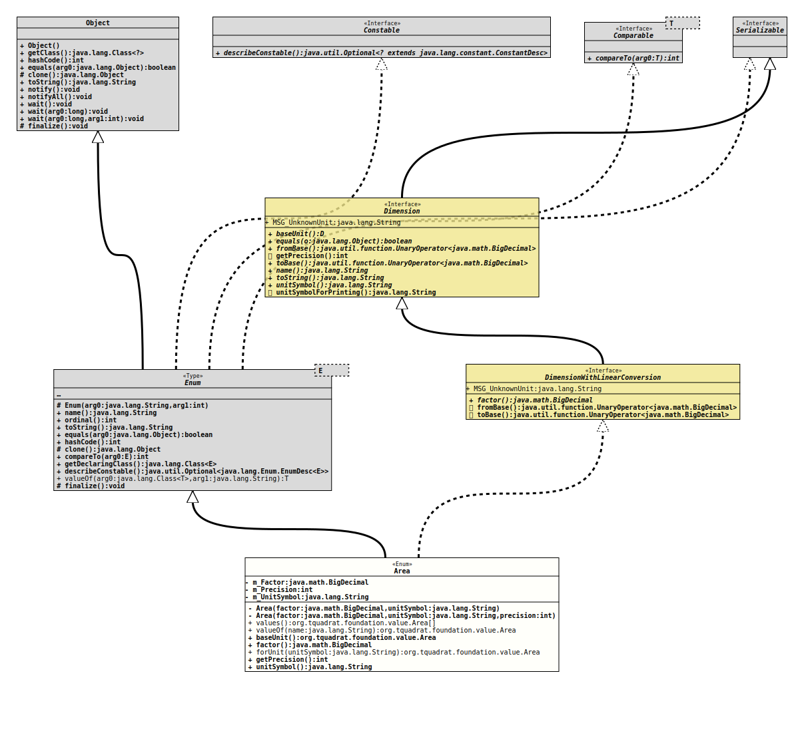

- All Implemented Interfaces:
Serializable,Comparable<Area>,Constable,Dimension,DimensionWithLinearConversion
@ClassVersion(sourceVersion="$Id: Area.java 1072 2023-09-30 20:44:38Z tquadrat $")
@API(status=STABLE,
since="0.1.0")
public enum Area
extends Enum<Area>
implements DimensionWithLinearConversion
The various instances of area …
- Author:
- Thomas Thrien (thomas.thrien@tquadrat.org)
- Version:
- $Id: Area.java 1072 2023-09-30 20:44:38Z tquadrat $
- Since:
- 0.1.0
- UML Diagram
-

UML Diagram for "org.tquadrat.foundation.value.Area"
{kind=link}
-
Nested Class Summary
Nested classes/interfaces inherited from class java.lang.Enum
Enum.EnumDesc<E extends Enum<E>> -
Enum Constant Summary
Enum ConstantsEnum ConstantDescriptionAn acre.An Ar (a unit for areas, used in the EU and Switzerland).A hektar (a unit for areas, used in the EU and Switzerland).A %quot;Morgen", an ancient unit for areas that was used in Germany (and is still used sometimes).A square centimeter.A square foot (144 square inch).A square inch.A square kilometer.A square_meter.A square mile (1760 yard).A square millimeter.A square yard (9 square feet). -
Field Summary
FieldsModifier and TypeFieldDescriptionprivate final BigDecimalThe factor.private final intThe default precision.private final StringThe unit string.Fields inherited from interface org.tquadrat.foundation.value.api.DimensionWithLinearConversion
MSG_UnknownUnit -
Constructor Summary
ConstructorsModifierConstructorDescriptionprivateArea(BigDecimal factor, String unitSymbol) Creates a newAreainstance, with a default precision of zero mantissa digits.privateArea(BigDecimal factor, String unitSymbol, int precision) Creates a newAreainstance. -
Method Summary
Modifier and TypeMethodDescriptionfinal AreabaseUnit()Returns the base unit.final BigDecimalfactor()Returns the factor that is used to convert a value from this unit to the base unit.static final AreaReturns theAreainstance for the given unit symbol.final intReturns the default precision for this unit that is used when the respective value is converted to a String.final StringReturns the unit symbol for the dimension as a single line string.static AreaReturns the enum constant of this class with the specified name.static Area[]values()Returns an array containing the constants of this enum class, in the order they are declared.Methods inherited from class java.lang.Enum
clone, compareTo, describeConstable, equals, finalize, getDeclaringClass, hashCode, name, ordinal, toString, valueOfMethods inherited from interface org.tquadrat.foundation.value.api.Dimension
equals, name, toString, unitSymbolForPrintingMethods inherited from interface org.tquadrat.foundation.value.api.DimensionWithLinearConversion
fromBase, toBase
-
Enum Constant Details
-
SQUARE_MILLIMETER
A square millimeter. -
SQUARE_CENTIMETER
A square centimeter. -
SQUARE_INCH
A square inch. -
SQUARE_FOOT
A square foot (144 square inch). -
SQUARE_YARD
A square yard (9 square feet). -
SQUARE_METER
A square_meter. -
AR
An Ar (a unit for areas, used in the EU and Switzerland). It is 100 square meter. -
MORGEN
A %quot;Morgen", an ancient unit for areas that was used in Germany (and is still used sometimes). It is 25 ar, 2500 square meter or ¼ ha. -
ACRE
An acre. -
HEKTAR
A hektar (a unit for areas, used in the EU and Switzerland). It is 100 a or 10000 square meter. -
SQUARE_KILOMETER
A square kilometer. -
SQUARE_MILE
A square mile (1760 yard).
-
-
Field Details
-
m_Factor
The factor. -
m_Precision
The default precision. -
m_UnitSymbol
The unit string.
-
-
Constructor Details
-
Area
Creates a newAreainstance, with a default precision of zero mantissa digits.- Parameters:
factor- The factor.unitSymbol- The unit symbol String.
-
Area
Creates a newAreainstance.- Parameters:
factor- The factor.unitSymbol- The unit symbol String.precision- The default precision.
-
-
Method Details
-
values
Returns an array containing the constants of this enum class, in the order they are declared.- Returns:
- an array containing the constants of this enum class, in the order they are declared
-
valueOf
Returns the enum constant of this class with the specified name. The string must match exactly an identifier used to declare an enum constant in this class. (Extraneous whitespace characters are not permitted.)- Parameters:
name- the name of the enum constant to be returned.- Returns:
- the enum constant with the specified name
- Throws:
IllegalArgumentException- if this enum class has no constant with the specified nameNullPointerException- if the argument is null
-
baseUnit
Returns the base unit.
E.g. for length, the base unit would be Meter (m), for mass, it is Kilogram (kg), and so on.
-
factor
Returns the factor that is used to convert a value from this unit to the base unit.
For length, if you have to convert a Centimeter value to Meter, you will divide that by 100 or multiply it with a factor of 0.01.
For the base unit, the factor is 1.0.
- Specified by:
factorin interfaceDimensionWithLinearConversion- Returns:
- The factor.
- See Also:
-
forUnit
Returns theAreainstance for the given unit symbol.- Parameters:
unitSymbol- The unit symbol.- Returns:
- The respective instance.
- Throws:
IllegalArgumentException- The given unit is unknown.
-
getPrecision
Returns the default precision for this unit that is used when the respective value is converted to a String.- Specified by:
getPrecisionin interfaceDimension- Returns:
- The mantissa length for a value with this unit.
-
unitSymbol
Returns the unit symbol for the dimension as a single line string.
For a length, this would be "m", for a speed "km/h", and for an acceleration, it could be "m/(s^2)".
- Specified by:
unitSymbolin interfaceDimension- Returns:
- The unit.
-